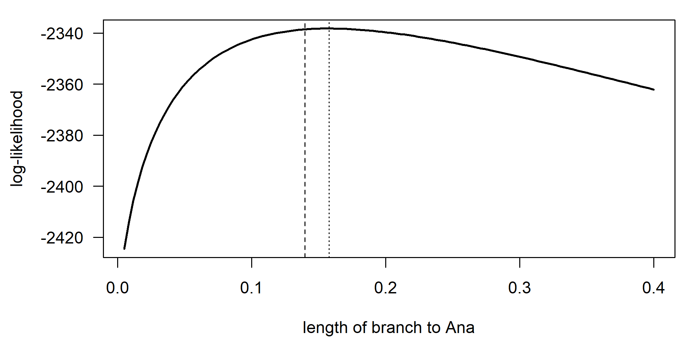

B Technical Notes: Trees and Inference
This appendix collects the technical material behind Chapters 2 to 6: derivations of results that the chapters state without proof, algorithms written out step by step, implementations from scratch in R, and checks of those implementations against established packages. The chapters can be read without it. It is meant for readers who want to see exactly how a number is computed, who need to adapt an algorithm, or who want to verify that a package does what its documentation says.
There is one section per chapter. Each section is self-contained: every code chunk recreates the trees, data and functions it needs, with the same random seeds as the chapter, so it can be run in a fresh R session. Most of the code checks a hand-written implementation against a package. In the vocabulary of Section 6.10, these checks are implementation validation: they show that the code computes what the model says, not that the model describes languages well. Background on probability, likelihood, matrices and continuous-time Markov chains is in Appendix A. Chapter 3 has no technical notes of its own.
B.1 Chapter 2: Trees, Networks and Tree Space
B.1.1 Counting trees
The number of unrooted binary trees in equation (2.1) follows from adding tips one at a time. There is only one unrooted tree for three tips. A fourth tip can be attached to any of the three branches of that tree, giving three trees. In general, an unrooted binary tree with \(k\) tips has \(2k-3\) branches, so the \((k+1)\)th tip can be attached in \(2k-3\) ways, and every unrooted tree on \(k+1\) tips arises in exactly one way (remove tip \(k+1\) and its branch, and the tree on \(k\) tips and the attachment branch are recovered). Multiplying,
\[U(n) = \prod_{k=3}^{n-1} (2k-3) = 1 \times 3 \times 5 \times \cdots \times (2n-5) = (2n-5)!!.\]
A rooted tree with \(n\) tips corresponds one-to-one to an unrooted tree with \(n+1\) tips, one of which marks the root: attach an extra tip at the root and unroot, or, conversely, delete the marker tip and make its point of attachment the root. Hence \(R(n) = U(n+1) = (2n-3)!!\), and writing the double factorial with ordinary factorials gives the closed form in equation (2.2). Equivalently, a rooted tree with \(n\) tips has \(2n-2\) branches, plus the possibility of attaching a new tip above the root, so the \((k+1)\)th tip can be added in \(2k-1\) ways.
The number of ranked trees (labeled histories; Section 2.3) follows from building the tree backwards in time: with \(j\) lineages, the next coalescence (looking backwards) joins one of \(\binom{j}{2}\) pairs, so
\[\begin{equation} H(n) = \prod_{j=2}^{n} \binom{j}{2} = \frac{n!\,(n-1)!}{2^{n-1}}. \tag{B.1} \end{equation}\]
For four tips there are 15 rooted trees but 18 ranked trees, because each of the three balanced topologies of the form ((A,B),(C,D)) admits two orders for its two cherries, while each of the twelve “caterpillar” topologies admits only one. The distinction matters for priors: a uniform distribution on ranked trees, which is what the Yule process implies, is not uniform on topologies, and gives balanced topologies more prior weight than caterpillars. The code below checks the formulas by brute force for small \(n\), enumerating rooted topologies with phangorn’s allTrees().
library(phangorn)
dfact <- function(m) if (m <= 1) 1 else prod(seq(m, 1, by = -2))
ranks <- function(tr) { # number of rankings of a rooted binary topology
# = (number of internal nodes)! / prod over internal nodes of subtree sizes
# internal nodes in the subtree of a node = (tips below it) - 1
sizes <- lengths(prop.part(tr)) - 1
factorial(Nnode(tr)) / prod(sizes)
}
check <- t(sapply(3:6, function(n) {
trs <- allTrees(n, rooted = TRUE)
c(n = n, rooted_enumerated = length(trs), rooted_formula = dfact(2 * n - 3),
ranked_enumerated = sum(sapply(trs, ranks)),
ranked_formula = factorial(n) * factorial(n - 1) / 2^(n - 1))
}))
check#> n rooted_enumerated rooted_formula ranked_enumerated
#> [1,] 3 3 3 3
#> [2,] 4 15 15 18
#> [3,] 5 105 105 180
#> [4,] 6 945 945 2700
#> ranked_formula
#> [1,] 3
#> [2,] 18
#> [3,] 180
#> [4,] 2700The function ranks() uses the fact that a ranking of the internal nodes is a linear order consistent with the tree (every node younger than its parent), and the number of such orders is the factorial of the number of internal nodes divided by the product, over internal nodes, of the number of internal nodes in the subtree that each one heads (for a binary tree, the number of tips below it minus one).
B.1.2 Tree distances: formulas and a quartet implementation
Writing \(S(\tau)\) for the set of non-trivial splits of tree \(\tau\) and \(b_s(\tau)\) for the length of the branch inducing split \(s\) in \(\tau\) (zero if \(s\) is absent), the branch-score distance of Kuhner and Felsenstein (1994) is
\[\begin{equation} d_{KF}(\tau_1, \tau_2) = \sqrt{\sum_{s \in S(\tau_1) \cup S(\tau_2)} \big(b_s(\tau_1) - b_s(\tau_2)\big)^2}. \tag{B.2} \end{equation}\]
Path-length distances compare the matrices of distances between tips. If \(d_{ij}(\tau)\) is the number of branches (or the sum of branch lengths) on the path between tips \(i\) and \(j\),
\[\begin{equation} d_{path}(\tau_1, \tau_2) = \sqrt{\sum_{i<j} \big(d_{ij}(\tau_1) - d_{ij}(\tau_2)\big)^2}. \tag{B.3} \end{equation}\]
In phangorn these are KF.dist() and path.dist(). The RF distance is the special case of the branch-score distance in which every branch has length one, squared: each split present in one tree only contributes \(1^2\).
The quartet distance of Chapter 2 can be computed from scratch for small trees. The topology a tree assigns to quartet \(\{a,b,c,d\}\) is the pairing with the smallest sum of within-pair path lengths, which is the four-point condition of Chapter 4 in disguise; with branch lengths set to one, a quartet left unresolved by a polytomy has two (or three) equal minimal sums. The code recreates the chapter’s toy tree and bootstrap sample with the same seed and checks the implementation against the Quartet package.
library(phangorn)
ie_nwk <- paste0(
"((((((Italian:1.2,Spanish:1.2):0.3,French:1.5)Romance:2.5,",
"(Irish:2.5,Welsh:2.5)Celtic:1.5)ItaloCeltic:0.5,",
"((English:1.5,German:1.5):0.5,Swedish:2.0)Germanic:2.5):0.5,",
"((Russian:1.2,Polish:1.2):1.8,Lithuanian:3.0)BaltoSlavic:2.0):1.5,",
"(((Greek:4.8,Armenian:4.8):0.4,Albanian:5.2):0.6,",
"(Hindi:3.8,Persian:3.8)IndoIranian:2.0):0.7)IndoEuropean;")
ie <- read.tree(text = ie_nwk)
set.seed(2024)
sim <- simSeq(ie, l = 400, type = "USER", levels = c("0", "1"), rate = 0.05)
boot_trees <- bootstrap.phyDat(sim, bs = 200,
FUN = function(x) upgma(dist.hamming(x)))
boot_trees <- .compressTipLabel(boot_trees)
quartet_topology <- function(tree, quads) {
tree$edge.length <- rep(1, Nedge(tree)) # count branches, not time
d <- cophenetic(tree)
apply(quads, 2, function(q) {
s <- c(d[q[1], q[2]] + d[q[3], q[4]], # ab|cd
d[q[1], q[3]] + d[q[2], q[4]], # ac|bd
d[q[1], q[4]] + d[q[2], q[3]]) # ad|bc
w <- which(s == min(s))
if (length(w) == 1) w else 0L # 0 = unresolved
})
}
quartet_distance_hand <- function(t1, t2, generalized = FALSE) {
quads <- combn(sort(t1$tip.label), 4)
q1 <- quartet_topology(t1, quads); q2 <- quartet_topology(t2, quads)
if (generalized) { # GQD: only quartets resolved in t2 (reference)
keep <- q2 != 0
return(sum(q1[keep] != q2[keep]) / sum(keep))
}
sum(q1 != q2) / ncol(quads)
}
quartet_distance_pkg <- function(t1, t2, generalized = FALSE) {
qs <- Quartet::QuartetStatus(t1, cf = t2)
if (generalized) return(unname(qs[, "d"] / (qs[, "s"] + qs[, "d"])))
unname((qs[, "d"] + qs[, "r1"] + qs[, "r2"]) / qs[, "Q"])
}
classification <- di2multi(ie, tol = 0.71)
rbind(
hand = c(quartet_distance_hand(ie, boot_trees[[1]]),
quartet_distance_hand(boot_trees[[1]], classification),
quartet_distance_hand(boot_trees[[1]], classification, TRUE)),
Quartet = c(quartet_distance_pkg(ie, boot_trees[[1]]),
quartet_distance_pkg(boot_trees[[1]], classification),
quartet_distance_pkg(boot_trees[[1]], classification, TRUE)))#> [,1] [,2] [,3]
#> hand 0.08626 0.3099 0
#> Quartet 0.08626 0.3099 0The direct implementation examines all \(\binom{n}{4}\) quartets and computes a full distance matrix, so its cost grows as \(n^4\); the algorithms used in Quartet (from the tqDist library) scale to thousands of tips.
B.1.3 Uniform random trees by Rémy’s algorithm
Chapter 2 compares the Colless index of Yule trees with that of trees drawn from the uniform (PDA) distribution on rooted topologies. A short way to draw such trees is Rémy’s algorithm, which grows a uniformly random rooted tree by repeatedly choosing a node (tip or internal) uniformly at random and inserting a new tip on the branch above it (or above the root). Each step multiplies the number of possible histories by the number of nodes, \(2k-1\) for a tree with \(k\) tips, which is exactly the factor by which the number of rooted topologies grows (Section B.1.1), so every topology is equally likely. The implementation below represents a tree as nested lists and reproduces the comparison of the chapter.
colless <- function(tree) { b <- balance(tree); sum(abs(b[, 1] - b[, 2])) }
# Uniform (PDA) random rooted trees by Remy's algorithm, as nested lists
n_nodes <- function(t) if (is.character(t)) 1 else
1 + n_nodes(t[[1]]) + n_nodes(t[[2]])
insert_tip <- function(t, k, lab) {
if (k == 1) return(list(t, lab))
k <- k - 1; c1 <- n_nodes(t[[1]])
if (k <= c1) t[[1]] <- insert_tip(t[[1]], k, lab)
else t[[2]] <- insert_tip(t[[2]], k - c1, lab)
t
}
to_newick <- function(t) if (is.character(t)) t else
paste0("(", to_newick(t[[1]]), ",", to_newick(t[[2]]), ")")
rpda <- function(n) {
t <- "t1"
for (i in 2:n) t <- insert_tip(t, sample.int(n_nodes(t), 1), paste0("t", i))
read.tree(text = paste0(to_newick(t), ";"))
}
set.seed(1)
n_tips <- 30
colless_remy <- replicate(500, colless(rpda(n_tips)))
colless_tt <- replicate(500, colless(TreeTools::RandomTree(n_tips,
root = TRUE)))
rbind(Remy = summary(colless_remy), TreeTools = summary(colless_tt))#> Min. 1st Qu. Median Mean 3rd Qu. Max.
#> Remy 49 129 166.5 168.0 204 311
#> TreeTools 48 122 155.5 160.4 194 341# for 4 tips, all 15 rooted topologies should be about equally frequent
set.seed(2)
tab4 <- table(replicate(15000, write.tree(ladderize(rpda(4)))))
c(topologies = length(tab4), min = min(tab4), max = max(tab4))#> topologies min max
#> 15 936 1044B.1.4 The geometry of tree space
The geometry of the space of rooted trees with branch lengths discovered by Billera et al. (2001) (Section 2.8) is built as follows. Fix a topology with \(n\) tips: its \(n-2\) internal branch lengths are non-negative real numbers, so the trees with that topology form an orthant, a copy of the non-negative part of \((n-2)\)-dimensional space. When an internal branch shrinks to length zero, the tree reaches the boundary of its orthant, where it is identical to a tree in each of the neighboring orthants that differ from it by one NNI across that branch. Gluing all \((2n-3)!!\) orthants along these shared boundaries gives the BHV tree space (after Billera, Holmes and Vogtmann). In this space there is a unique shortest path (geodesic) between any two trees, which passes through lower-dimensional faces (trees with polytomies) when the topologies differ, and the geodesic distance can be computed in polynomial time (Owen and Provan 2011). Besides geometric means and variances of tree samples, the BHV geometry makes possible confidence regions and principal component-like analyses of tree variation. Because geodesics between trees with different topologies pass through trees with polytomies, the geometric mean of a diffuse posterior sample is often a tree with polytomies, a natural expression of the uncertainty that an MCC tree hides. The metric of Kendall and Colijn (2016) for rooted time trees can be tuned to weight topology or branch lengths more heavily.
B.2 Chapter 4: Distance and Parsimony Methods
B.2.1 The neighbor-joining algorithm in detail
Neighbor joining (Section 4.5) joins at each step the pair of clusters \(i\), \(j\) that minimizes \(Q_{ij}\) (equation (4.7)), where \(n\) is the current number of clusters and \(R_i = \sum_k d_{ik}\). When \(i\) and \(j\) are joined into a new node \(u\), their branch lengths are
\[\begin{equation} v_i = \frac{d_{ij}}{2} + \frac{R_i - R_j}{2(n-2)}, \qquad v_j = d_{ij} - v_i, \tag{B.4} \end{equation}\]
and the distances from \(u\) to each remaining cluster \(k\) are
\[\begin{equation} d_{uk} = \tfrac{1}{2}\left(d_{ik} + d_{jk} - d_{ij}\right). \tag{B.5} \end{equation}\]
Equation (B.4) splits the distance \(d_{ij}\) between the two branches, giving the longer branch to the language that is on average farther from all others; equation (B.5) is the distance from the new node to \(k\) that would hold exactly on an additive tree, since \(d_{ik} + d_{jk}\) counts the path from \(u\) to \(k\) twice plus the two new branches. In the four-language example of the chapter, \(v_A = 5/2 + (16 - 22)/4 = 1\) and \(v_B = 5 - 1 = 4\).
Why does the \(Q\) criterion work? Saitou and Nei (1987) motivated it as a greedy step toward the tree with the smallest total length (the minimum evolution principle). Studier and Keppler (1988) showed that the criterion as originally stated could be simplified to equation (4.7), and Gascuel and Steel (2006) later clarified that NJ is a greedy algorithm for the balanced minimum evolution criterion. Its guarantees of exact recovery from additive matrices and of robustness to noise (Atteson 1999), and the BIONJ variant (Gascuel 1997), which replaces the simple average in equation (B.5) by a variance-minimizing weighted average, are described in Section 4.5.
The code below computes the \(Q\) matrix for the five-language additive matrix D5 of Section 4.3 and checks that the pair it selects, D and E, is the one NJ joins first; it then carries out the first joining step by hand.
true5 <- read.tree(text = "((A:2,B:3):2,C:4,(D:1,E:5):3);")
D5 <- cophenetic(true5)[LETTERS[1:5], LETTERS[1:5]]
nj_Q <- function(D) {
n <- nrow(D); R <- rowSums(D)
Q <- (n - 2) * D - outer(R, R, "+")
diag(Q) <- NA
Q
}
nj_Q(D5)#> A B C D E
#> A NA -54 -46 -40 -40
#> B -54 NA -46 -40 -40
#> C -46 -46 NA -44 -44
#> D -40 -40 -44 NA -56
#> E -40 -40 -44 -56 NA#> [1] "(B:3,A:2,((D:1,E:5):3,C:4):2);"# the first joining step by hand: D and E
n <- nrow(D5); R <- rowSums(D5)
v_D <- D5["D", "E"] / 2 + (R["D"] - R["E"]) / (2 * (n - 2))
c(v_D = unname(v_D), v_E = unname(D5["D", "E"] - v_D))#> v_D v_E
#> 1 5d_u <- (D5[c("A", "B", "C"), "D"] + D5[c("A", "B", "C"), "E"] -
D5["D", "E"]) / 2
d_u # distances from the new node to A, B, C#> A B C
#> 7 8 7The branch lengths of D and E (1 and 5) and the distances from their common ancestor to A, B and C (7, 8 and 7) are exactly those of the generating tree, as they must be for an additive matrix.
B.2.2 Fitch’s algorithm in detail
Fitch’s algorithm (Section 4.9), whose correctness was proved by Hartigan (1973), works on a rooted binary tree from the leaves to the root (a postorder traversal). Each node receives a set of states:
- A leaf receives the set containing its observed state.
- An internal node with children whose sets are \(S_1\) and \(S_2\) receives \[\begin{equation} S = \begin{cases} S_1 \cap S_2 & \text{if } S_1 \cap S_2 \neq \emptyset, \\ S_1 \cup S_2 & \text{otherwise, adding one step.} \end{cases} \tag{B.6} \end{equation}\]
The number of union operations is the parsimony score. A second, top-down pass recovers actual reconstructions at internal nodes: give the root any state in its set, and give each child its parent’s state if that state is in the child’s set, otherwise any state from the child’s set. The sets computed in the first pass are not, in general, the sets of all states that some most-parsimonious reconstruction assigns to an internal node; recovering all optimal reconstructions requires Hartigan’s more general algorithm or the Sankoff algorithm below. For a polytomy, the rule is applied to the children one at a time, as in the code.
The function below implements the first pass directly and is checked against phangorn’s parsimony(), on the ‘hand’ example of Section 4.9 and on 200 random characters on a random tree.
library(phangorn)
fitch_score <- function(tree, states) {
tree <- reorder(tree, "postorder")
ntip <- Ntip(tree)
sets <- vector("list", ntip + tree$Nnode)
for (i in seq_len(ntip)) sets[[i]] <- states[tree$tip.label[i]]
score <- 0
for (node in unique(tree$edge[, 1])) { # internal nodes, postorder
kids <- tree$edge[tree$edge[, 1] == node, 2]
S <- sets[[kids[1]]]
for (k in kids[-1]) {
common <- intersect(S, sets[[k]])
if (length(common) > 0) S <- common else {
S <- union(S, sets[[k]]); score <- score + 1
}
}
sets[[node]] <- S
}
list(score = score, root_set = sets[[ntip + 1]])
}
tr7 <- read.tree(text =
"(((English,German),Swedish),((Italian,Spanish),(Russian,Polish)));")
hand <- c(English = "H", German = "H", Swedish = "H",
Italian = "M", Spanish = "M", Russian = "R", Polish = "R")
fitch_score(tr7, hand)#> $score
#> [1] 2
#>
#> $root_set
#> [1] "H" "M" "R"hand_pd <- phyDat(matrix(hand, ncol = 1, dimnames = list(names(hand), NULL)),
type = "USER", levels = c("H", "M", "R"))
parsimony(tr7, hand_pd, method = "fitch")#> [1] 2# a larger check: 200 random four-state characters on a random 12-tip tree
set.seed(12)
tr12 <- rtree(12)
X <- matrix(sample(c("a", "b", "c", "d"), 12 * 200, replace = TRUE), 12,
dimnames = list(tr12$tip.label, NULL))
hand_scores <- apply(X, 2, function(s) fitch_score(tr12, s)$score)
c(hand = sum(hand_scores),
phangorn = parsimony(tr12, phyDat(X, type = "USER",
levels = c("a", "b", "c", "d"))))#> hand phangorn
#> 1247 1247B.2.3 The Sankoff algorithm
The recursion of the Sankoff algorithm (Section 4.10) for a cost matrix \(c(a, b)\) is as follows. For each node \(v\) and state \(a\), let \(L_v(a)\) be the minimum cost of the subtree below \(v\) given that \(v\) is in state \(a\). For a leaf, \(L_v(a) = 0\) if \(a\) is the observed state and \(\infty\) otherwise. For an internal node with children \(u\) and \(w\),
\[\begin{equation} L_v(a) = \min_b \left[c(a, b) + L_u(b)\right] + \min_b \left[c(a, b) + L_w(b)\right], \tag{B.7} \end{equation}\]
and the tree’s cost is \(\min_a L_{\text{root}}(a)\). With unit costs it reproduces the Fitch score. Because the costs may be asymmetric, the tree must be rooted, and the root state matters: under a Dollo-like cost matrix, a root in state 1 (cognate present) followed by losses can be much cheaper than a root in state 0 followed by gains. Felsenstein’s pruning algorithm (equation (5.8)) has exactly the same structure.
The implementation below evaluates the recursion on a binary cognate character, the presence of the Germanic hand cognate set in the seven languages of the chapter’s example, under the Dollo-like cost matrix of Section 4.10 (gain costs 10, loss costs 1), and checks the result against phangorn.
sankoff_cost <- function(tree, states, cost) {
tree <- reorder(tree, "postorder")
ntip <- Ntip(tree); lev <- rownames(cost)
L <- matrix(0, ntip + tree$Nnode, length(lev), dimnames = list(NULL, lev))
for (i in seq_len(ntip)) {
L[i, ] <- Inf; L[i, states[tree$tip.label[i]]] <- 0
}
for (e in seq_len(nrow(tree$edge))) { # children before parents
p <- tree$edge[e, 1]; ch <- tree$edge[e, 2]
L[p, ] <- L[p, ] + sapply(lev, function(a) min(cost[a, ] + L[ch, ]))
}
L[ntip + 1, ] # cost by root state
}
dollo_cost <- matrix(c(0, 10,
1, 0), nrow = 2, byrow = TRUE,
dimnames = list(c("0", "1"), c("0", "1")))
tr7r <- read.tree(text =
"(((English,German),Swedish),((Italian,Spanish),(Russian,Polish)));")
germanic_hand <- c(English = "1", German = "1", Swedish = "1",
Italian = "0", Spanish = "0", Russian = "0", Polish = "0")
sankoff_cost(tr7r, germanic_hand, dollo_cost)#> 0 1
#> 10 1gh_pd <- phyDat(matrix(germanic_hand, ncol = 1,
dimnames = list(names(germanic_hand), NULL)),
type = "USER", levels = c("0", "1"))
parsimony(tr7r, gh_pd, method = "sankoff", cost = dollo_cost)#> [1] 1With the root in state 0 (absent), the character needs one gain on the Germanic stem (cost 10); with the root in state 1 (present), a single loss on the branch leading to Romance and Slavic suffices (cost 1), which is the cheaper explanation. Under this rooting and cost matrix, the Germanic word is therefore reconstructed for the root language and lost in the rest of the family, which the comparative method tells us is wrong. Under a Dollo-like cost matrix, a cognate set shared by a subgroup is read as an old word lost elsewhere unless that requires many independent losses; the cost scheme, like a substitution model, builds assumptions about linguistic change into the inference, and the position of the root interacts with them.
B.2.4 Classical MDS, PCA and stress
Classical MDS (Section 4.7) rests on a simple identity. If \(n\) points \(\mathbf{x}_1, \ldots, \mathbf{x}_n\) have been centered, so that \(\sum_i \mathbf{x}_i = \mathbf{0}\), their squared Euclidean distances \(d_{ij}^2 = \lVert \mathbf{x}_i - \mathbf{x}_j \rVert^2\) determine the matrix of inner products \(b_{ij} = \mathbf{x}_i^\top \mathbf{x}_j\) through \[\begin{equation} \mathbf{B} = -\tfrac{1}{2}\, \mathbf{J}\, \mathbf{D}^{(2)} \mathbf{J}, \qquad \mathbf{J} = \mathbf{I} - \tfrac{1}{n}\mathbf{1}\mathbf{1}^\top, \tag{B.8} \end{equation}\] because expanding \(d_{ij}^2 = b_{ii} + b_{jj} - 2 b_{ij}\) and double-centering removes the first two terms. \(\mathbf{B}\) is symmetric and positive semidefinite, so it can be written \(\mathbf{B} = \mathbf{V}\boldsymbol\Lambda\mathbf{V}^\top\), and the coordinates \(\mathbf{V}\boldsymbol\Lambda^{1/2}\) reproduce the distances exactly. Keeping the \(k\) largest eigenvalues gives the best \(k\)-dimensional approximation of \(\mathbf{B}\) in the least-squares sense. When the points are the rows of a centered data matrix \(\mathbf{X}\), \(\mathbf{B} = \mathbf{X}\mathbf{X}^\top\), whose eigenvectors scaled by the square roots of the eigenvalues are exactly the principal component scores of \(\mathbf{X}\). If the input dissimilarities are not Euclidean distances, Equation (B.8) still defines \(\mathbf{B}\), but some of its eigenvalues are negative, and no configuration of points reproduces the matrix.
Non-metric MDS minimizes Kruskal’s stress-1,
\[\begin{equation}
S = \sqrt{\frac{\sum_{i<j} (d_{ij} - \hat d_{ij})^2}{\sum_{i<j} d_{ij}^2}},
\tag{B.9}
\end{equation}\]
where \(d_{ij}\) are the distances in the configuration and the disparities \(\hat d_{ij}\) are the monotone (isotonic) regression of the \(d_{ij}\) on the rank order of the input dissimilarities (Kruskal 1964). MASS’s isoMDS() reports \(100\,S\). The code below implements classical MDS and stress-1 from these formulas, checks them against cmdscale(), prcomp() and isoMDS(), and shows the negative eigenvalues produced by corrected binary distances.
library(phangorn)
library(MASS)
set.seed(11)
tr <- rtree(8, tip.label = paste0("L", 1:8))
tr$edge.length <- tr$edge.length * 0.4
sim <- simSeq(tr, l = 200, type = "USER", levels = c("0", "1"))
X <- matrix(as.integer(as.character(sim)), nrow = length(sim),
dimnames = list(names(sim), NULL))
cmds <- function(D, k = 2) { # classical MDS by hand
D2 <- as.matrix(D)^2
n <- nrow(D2); J <- diag(n) - matrix(1 / n, n, n)
e <- eigen(-0.5 * J %*% D2 %*% J, symmetric = TRUE)
list(points = e$vectors[, 1:k] %*% diag(sqrt(e$values[1:k])),
values = e$values)
}
DE <- dist(X) # Euclidean distances
mine <- cmds(DE)
c(vs_cmdscale = isTRUE(all.equal(abs(mine$points),
abs(unname(cmdscale(DE, k = 2))))),
vs_prcomp = isTRUE(all.equal(abs(mine$points),
abs(unname(prcomp(X)$x[, 1:2])))))#> vs_cmdscale vs_prcomp
#> TRUE TRUE# corrected binary distances are not Euclidean: negative eigenvalues
p <- as.matrix(dist.hamming(sim))
d_corr <- as.dist(-0.5 * log(1 - 2 * pmin(p, 0.499)))
round(cmds(d_corr)$values, 3)#> [1] 2.137 0.480 0.223 0.072 0.047 0.000 -0.004 -0.539stress1 <- function(delta, conf) { # Kruskal's stress-1, in %
delta <- as.vector(delta); d <- as.vector(dist(conf))
o <- order(delta)
dhat <- numeric(length(d)); dhat[o] <- isoreg(delta[o], d[o])$yf
100 * sqrt(sum((d - dhat)^2) / sum(d^2))
}
D_tree <- as.dist(cophenetic(tr)) # no tied dissimilarities
sapply(1:2, function(k) {
fit <- isoMDS(D_tree, k = k, trace = FALSE)
c(k = k, isoMDS = fit$stress, by_hand = stress1(D_tree, fit$points))
})#> [,1] [,2]
#> k 1.000000 2.000000
#> isoMDS 0.007634 0.009778
#> by_hand 0.007634 0.009778The hand-coded classical MDS reproduces cmdscale() and the PCA scores up to the signs of the axes, and the corrected distances give negative eigenvalues. The stress check uses the patristic distances of the tree, which have no ties. When several input dissimilarities are equal, as they often are for Hamming proportions computed from a few hundred characters, implementations differ in how they treat the ties in the monotone regression, and a hand computation can differ slightly from isoMDS(). In the vocabulary of Section 6.10, these checks are implementation validation only.
B.3 Chapter 5: Maximum Likelihood
This section collects the derivations and the from-scratch implementations behind Chapter 5. The chunk below recreates the chapter’s functions.
library(phangorn)
binary_P <- function(t, pi1) { # equation (likelihood-binaryP)
pi0 <- 1 - pi1
e <- exp(-t / (2 * pi0 * pi1))
matrix(c(pi0 + pi1 * e, pi1 * (1 - e),
pi0 * (1 - e), pi1 + pi0 * e), 2, byrow = TRUE)
}
binary_Q <- function(pi1) {
pi0 <- 1 - pi1
s <- 1 / (2 * pi0 * pi1)
matrix(c(-s * pi1, s * pi1, s * pi0, -s * pi0), 2, byrow = TRUE)
}
sim_binary <- function(tree, nchar, pi1, rates = rep(1, nchar)) {
tree <- reorder(tree, "cladewise")
ntip <- Ntip(tree); pi0 <- 1 - pi1
S <- matrix(NA_integer_, ntip + tree$Nnode, nchar)
S[ntip + 1, ] <- rbinom(nchar, 1, pi1)
for (e in seq_len(nrow(tree$edge))) {
p <- tree$edge[e, 1]; ch <- tree$edge[e, 2]
ex <- exp(-tree$edge.length[e] * rates / (2 * pi0 * pi1))
prob1 <- ifelse(S[p, ] == 1, pi1 + pi0 * ex, pi1 * (1 - ex))
S[ch, ] <- rbinom(nchar, 1, prob1)
}
out <- S[seq_len(ntip), , drop = FALSE]
rownames(out) <- tree$tip.label
out
}B.3.1 From rates to transition probabilities
Section 5.2 stated that the transition probabilities of a CTMC are given by the matrix exponential \(\mathbf{P}(t) = e^{\mathbf{Q}t}\) (equation (5.3)). The argument is short. By the Markov property, the probability of going from \(i\) to \(j\) in time \(t + h\) is the probability of going from \(i\) to some intermediate state \(l\) in time \(t\) and then from \(l\) to \(j\) in time \(h\), summed over \(l\). In matrix form this is the Chapman–Kolmogorov equation \(\mathbf{P}(t + h) = \mathbf{P}(t)\mathbf{P}(h)\). For small \(h\), \(\mathbf{P}(h) \approx \mathbf{I} + \mathbf{Q}h\), so \[\begin{equation} \frac{\mathbf{P}(t + h) - \mathbf{P}(t)}{h} \approx \mathbf{P}(t)\mathbf{Q} \quad\Longrightarrow\quad \frac{d}{dt}\mathbf{P}(t) = \mathbf{P}(t)\mathbf{Q}, \qquad \mathbf{P}(0) = \mathbf{I}. \tag{B.10} \end{equation}\] This matrix differential equation (Kolmogorov’s forward equation) has the solution \(\mathbf{P}(t) = e^{\mathbf{Q}t} = \sum_{n \geq 0} (\mathbf{Q}t)^n / n!\), as can be checked by differentiating the series term by term.
The series is not a good way to compute the exponential. If \(\mathbf{Q}\) can be diagonalized, \(\mathbf{Q} = \mathbf{U}\boldsymbol{\Lambda}\mathbf{U}^{-1}\) with \(\boldsymbol{\Lambda}\) the diagonal matrix of eigenvalues \(\lambda_1, \dots, \lambda_k\), then every power is \(\mathbf{Q}^n = \mathbf{U}\boldsymbol{\Lambda}^n\mathbf{U}^{-1}\) and so \[e^{\mathbf{Q}t} = \mathbf{U}\,\mathrm{diag}(e^{\lambda_1 t}, \dots, e^{\lambda_k t})\,\mathbf{U}^{-1}.\] For a reversible \(\mathbf{Q}\) the eigenvalues are real. Because the rows of \(\mathbf{Q}\) sum to zero, \(\mathbf{Q}\mathbf{1} = \mathbf{0}\) and one eigenvalue is 0, with eigenvector \(\mathbf{1}\); it gives the stationary part of \(\mathbf{P}(t)\), to which every row converges. The other eigenvalues are negative and set how quickly the starting state is forgotten.
For the binary model (5.4) the eigenvalues are \(0\) and \(-(\alpha+\beta)\). Writing \(\mathbf{P}(t) = \mathbf{A} + \mathbf{B}e^{-(\alpha+\beta)t}\), the condition \(\mathbf{P}(0) = \mathbf{I}\) gives \(\mathbf{A} + \mathbf{B} = \mathbf{I}\), and the limit \(t \to \infty\) gives \(\mathbf{A}\) with both rows equal to \(\pi\). Hence \(\mathbf{B} = \mathbf{I} - \mathbf{A}\), which is exactly the closed form (5.5). The code checks the eigendecomposition route against the closed form and against expm. Sections A.5 and A.6 explain eigenvalues and the matrix exponential in more detail.
#> [1] -2.381 0.000P_eigen <- function(t) {
eig$vectors %*% diag(exp(eig$values * t)) %*% solve(eig$vectors)
}
c(eigen_vs_closed = all.equal(P_eigen(0.4), binary_P(0.4, 0.3)),
expm_vs_closed = all.equal(unname(expm::expm(Q * 0.4)),
binary_P(0.4, 0.3)))#> eigen_vs_closed expm_vs_closed
#> TRUE TRUEB.3.2 A general pruning function
The function below implements the pruning algorithm of Section 5.4 for any tree and any binary data matrix, processing all characters at once: each node’s conditional likelihoods are stored as a \(2 \times m\) matrix, one column per character. It works on unrooted trees, because the node that ape stores as the root of an unrooted tree is simply a trifurcating node, and multiple children are handled by repeating the factor in equation (5.8). Missing data (NA) receive conditional likelihood 1 in both states.
prune_loglik <- function(tree, X, pi1, site = FALSE) {
# tree: phylo with branch lengths; X: 0/1 matrix, rows named by tip
# labels (NA = missing); pi1: equilibrium frequency of state 1
tree <- reorder(tree, "postorder")
ntip <- Ntip(tree)
L <- vector("list", ntip + tree$Nnode)
for (i in seq_len(ntip)) { # leaf vectors
s <- X[tree$tip.label[i], ]
L[[i]] <- rbind(as.numeric(s %in% c(0, NA)),
as.numeric(s %in% c(1, NA)))
}
for (v in (ntip + 1):(ntip + tree$Nnode)) L[[v]] <- matrix(1, 2, ncol(X))
for (e in seq_len(nrow(tree$edge))) { # postorder: children first
parent <- tree$edge[e, 1]; child <- tree$edge[e, 2]
L[[parent]] <- L[[parent]] *
(binary_P(tree$edge.length[e], pi1) %*% L[[child]])
}
lik <- colSums(L[[ntip + 1]] * c(1 - pi1, pi1)) # equation (root)
if (site) lik else sum(log(lik))
}
# the worked example of Section (likelihood-pruning)
Ps <- function(t) 0.5 * (1 + exp(-2 * t))
Pd <- function(t) 0.5 * (1 - exp(-2 * t))
Lv <- c(Ps(0.1) * Ps(0.3), Pd(0.1) * Pd(0.3))
L_hand <- 0.5 * Pd(0.1) * Pd(0.2) * (Ps(0.2) * Lv[1] + Pd(0.2) * Lv[2]) +
0.5 * Ps(0.1) * Ps(0.2) * (Pd(0.2) * Lv[1] + Ps(0.2) * Lv[2])
tr4 <- read.tree(
text = "((English:0.1,German:0.2):0.2,Italian:0.1,Spanish:0.3);")
x4 <- matrix(c(1, 1, 0, 0), ncol = 1,
dimnames = list(c("English", "German", "Italian", "Spanish"),
NULL))
c(general_function = prune_loglik(tr4, x4, 0.5, site = TRUE),
by_hand = L_hand)#> general_function by_hand
#> 0.05498 0.05498To check the function on a less trivial case, we use the eight-language matrix of Section 5.5 (same seed) and compare our log-likelihood with the one computed by phangorn’s pml(). This is implementation validation: two independent programs, given the same model, tree and data, must return the same number. We also check the pulley principle numerically by rerooting the tree, which splits one branch into two segments that sum to its original length.
set.seed(5)
langs8 <- c("Ana", "Bel", "Cor", "Dun", "Esk", "Fal", "Gor", "Hal")
tr8 <- rtree(8, rooted = FALSE, tip.label = langs8)
tr8$edge.length <- tr8$edge.length * 0.25
X8 <- sim_binary(tr8, 600, pi1 = 0.3)
pd8 <- phyDat(X8, type = "USER", levels = c(0, 1))
c(hand_coded = prune_loglik(tr8, X8, 0.3),
phangorn = pml(tr8, pd8, bf = c(0.7, 0.3))$logLik)#> hand_coded phangorn
#> -2339 -2339# the pulley principle: rerooting does not change the likelihood
c(original = prune_loglik(tr8, X8, 0.3),
rerooted = prune_loglik(root(tr8, "Cor", resolve.root = TRUE), X8, 0.3))#> original rerooted
#> -2339 -2339The two implementations agree, and rerooting leaves the likelihood unchanged.
B.3.3 Optimizing branch lengths
For a single branch with length \(t\), the log-likelihood \(\ell(t)\) is smooth, and its first and second derivatives can be computed cheaply because \(\frac{d}{dt}\mathbf{P}(t) = \mathbf{Q}\mathbf{P}(t)\). Newton–Raphson iteration, \[\begin{equation} t^{(n+1)} = t^{(n)} - \frac{\ell'(t^{(n)})}{\ell''(t^{(n)})}, \tag{B.11} \end{equation}\] then converges in a few steps from a reasonable starting value; programs guard against steps that leave the region where \(\ell\) is concave, for example by halving the step or falling back to Brent’s method. Figure B.1 shows the log-likelihood profile of one branch, which is the function Newton–Raphson climbs.
e_ana <- which(tr8$edge[, 2] == which(tr8$tip.label == "Ana"))
grid <- seq(0.005, 0.4, length.out = 120)
prof <- sapply(grid, function(b) {
tr <- tr8; tr$edge.length[e_ana] <- b
prune_loglik(tr, X8, 0.3)
})
# horizontal tick labels, so that all of them fit
par(mar = c(4, 5.2, 1, 1), las = 1)
plot(grid, prof, type = "l", lwd = 2, xlab = "length of branch to Ana",
ylab = "")
title(ylab = "log-likelihood", line = 3.9)
abline(v = tr8$edge.length[e_ana], lty = 2)
abline(v = grid[which.max(prof)], lty = 3)
Figure B.1: Profile of the log-likelihood as a function of the length of one terminal branch (leading to Ana) in the eight-language example, with all other branch lengths held at their true values. The dashed line marks the true length and the dotted line the maximum.
We can also optimize all branch lengths at once with a general-purpose optimizer. The function below maximizes the hand-coded likelihood over all 13 branch lengths (on a log scale, which keeps them positive), starting from a tree in which every branch has length 0.1, and compares the result with phangorn’s optim.pml(). Its optional argument correction applies the all-absent ascertainment correction of equation (5.10), used in the next subsection.
fit_branch_lengths <- function(tree, X, pi1, correction = FALSE) {
all_absent <- matrix(0, nrow(X), 1, dimnames = list(rownames(X), NULL))
negll <- function(log_bl) {
tree$edge.length <- exp(log_bl)
ll <- prune_loglik(tree, X, pi1)
if (correction) # condition on each character being observable
ll <- ll - ncol(X) *
log(1 - prune_loglik(tree, all_absent, pi1, site = TRUE))
-ll
}
o <- optim(log(tree$edge.length), negll, method = "L-BFGS-B",
lower = -12, upper = 1.5)
tree$edge.length <- exp(o$par)
list(tree = tree, logLik = -o$value)
}
start8 <- tr8; start8$edge.length <- rep(0.1, Nedge(start8))
fit_hand <- fit_branch_lengths(start8, X8, 0.3)
fit_phangorn <- optim.pml(pml(start8, pd8, bf = c(0.7, 0.3)),
optEdge = TRUE, control = pml.control(trace = 0))
c(logLik_hand = fit_hand$logLik, logLik_phangorn = fit_phangorn$logLik,
tree_length_hand = sum(fit_hand$tree$edge.length),
tree_length_phangorn = sum(fit_phangorn$tree$edge.length),
tree_length_true = sum(tr8$edge.length))#> logLik_hand logLik_phangorn tree_length_hand
#> -2334.514 -2334.514 1.590
#> tree_length_phangorn tree_length_true
#> 1.590 1.551The hand-coded optimization and phangorn reach the same maximum (implementation validation), and the estimated tree length is close to the true value used in the simulation (parameter recovery under the model’s own assumptions).
B.3.4 The all-absent ascertainment correction by hand
Section 5.6 demonstrated the Mkv correction, which conditions on characters being variable. Cognate matrices that keep sets present in every language (such as ‘two’) need instead the correction (5.10), which conditions only on a character not being absent everywhere. With the hand-coded functions we remove just the all-absent characters from the simulated matrix and fit branch lengths with and without the correction.
X8_obs <- X8[, colSums(X8) > 0] # what a linguist could observe
c(characters_simulated = ncol(X8), characters_observed = ncol(X8_obs))#> characters_simulated characters_observed
#> 600 453fit_uncorrected <- fit_branch_lengths(start8, X8_obs, 0.3,
correction = FALSE)
fit_corrected <- fit_branch_lengths(start8, X8_obs, 0.3,
correction = TRUE)
c(true = sum(tr8$edge.length),
uncorrected = sum(fit_uncorrected$tree$edge.length),
corrected = sum(fit_corrected$tree$edge.length))#> true uncorrected corrected
#> 1.551 2.144 1.524Without the correction the tree length is inflated; with it, the estimate is back near the truth. Fewer characters are removed by this filter than by the variability filter (only the all-absent ones), so the bias of the uncorrected analysis is smaller here than in the Mkv example of the chapter, but it has the same direction.
B.3.5 Escaping local optima by stochastic search
Section 5.7 showed that NNI hill climbing from random starting trees stalls on poor local optima. The code below recreates that experiment (same seed and data) and then runs phangorn’s stochastic search, which alternates NNI hill climbing with random perturbations of the current tree in the spirit of IQ-TREE, from the worst of the random starts.
set.seed(42)
true14 <- rcoal(14, tip.label = paste0("L", sprintf("%02d", 1:14)))
true14$edge.length <- true14$edge.length * 0.3
site_rates <- rgamma(600, shape = 0.5, rate = 0.5)
X14 <- sim_binary(true14, 600, pi1 = 0.3, rates = site_rates)
cog14 <- phyDat(X14, type = "USER", levels = c(0, 1))
ctl <- pml.control(trace = 0)
nj_start <- nj(dist.hamming(cog14))
fit_nj_start <- optim.pml(pml(nj_start, cog14, k = 4), optNni = TRUE,
optBf = TRUE, optGamma = TRUE, control = ctl)
random_starts <- lapply(1:5, function(i) {
st <- rtree(14, rooted = FALSE, tip.label = names(cog14))
f <- optim.pml(pml(st, cog14, k = 4), optNni = TRUE, optBf = TRUE,
optGamma = TRUE, control = ctl)
list(start = st, fit = f)
})
ll_random <- sapply(random_starts, function(r) r$fit$logLik)
worst <- random_starts[[which.min(ll_random)]]$start
fit_stochastic <- optim.pml(pml(worst, cog14, k = 4), optNni = TRUE,
optBf = TRUE, optGamma = TRUE,
rearrangement = "stochastic", control = ctl)
data.frame(
search = c("NNI from NJ tree", "NNI from worst random tree",
"stochastic from worst random tree"),
logLik = c(fit_nj_start$logLik, min(ll_random), fit_stochastic$logLik),
RF_to_true = c(RF.dist(fit_nj_start$tree, true14),
RF.dist(random_starts[[which.min(ll_random)]]$fit$tree,
true14),
RF.dist(fit_stochastic$tree, true14)))#> search logLik RF_to_true
#> 1 NNI from NJ tree -1895 0
#> 2 NNI from worst random tree -2347 12
#> 3 stochastic from worst random tree -1895 0The stochastic search escapes the local optimum in which NNI hill climbing from the same starting tree became stuck and ends close to the result obtained from the NJ starting tree. Perturbation, larger rearrangements and multiple independent searches are the standard remedies for rugged likelihood surfaces in tree space (Section 5.7).
B.4 Chapter 6: Bayesian Phylogenetic Inference
This section contains the derivations, the from-scratch tree sampler and the marginal-likelihood estimators behind Chapter 6.
B.4.1 The Yule tree density
Under the Yule process of Section 6.2, while there are \(j\) lineages the waiting time \(w_j\) to the next split is exponential with rate \(j\lambda\), and the lineage that splits is chosen uniformly among the \(j\), with probability \(1/j\). The density of a particular split happening after a waiting time \(w_j\) is therefore \((1/j)\, j\lambda\, e^{-j\lambda w_j} = \lambda e^{-j\lambda w_j}\): the probability of choosing the particular lineage cancels the factor \(j\) in the rate. After the last split, \(n\) lineages survive to the present for a time \(w_n\) with probability \(e^{-n\lambda w_n}\). Multiplying these factors over the history of a tree with \(n\) leaves, the density of a particular labeled history (a topology with a ranking of its internal nodes) and its waiting times \(w_2, \dots, w_n\) is \[\begin{equation} f(\tau, \mathbf{w} \mid \lambda) = \prod_{j=2}^{n-1} \lambda e^{-j\lambda w_j} \times e^{-n\lambda w_n} = \lambda^{n-2} \exp\left(-\lambda \sum_{j=2}^{n} j w_j\right) = \lambda^{n-2} e^{-\lambda T(\tau)}, \tag{B.12} \end{equation}\] where \(T(\tau) = \sum_j j w_j\) is the total length of all branches, since during the interval \(w_j\) exactly \(j\) branches are growing. For fixed \(n\) it is maximized over \(\lambda\) at \(\hat\lambda = (n-2)/T\), the number of splits after the root divided by the total time at risk of splitting.
B.4.2 Why Metropolis–Hastings works, and Hastings ratios
A Markov chain with transition probabilities \(P(x \to x')\) has the posterior \(\pi\) as its stationary distribution if it satisfies detailed balance, \(\pi(x) P(x \to x') = \pi(x') P(x' \to x)\) for all \(x\) and \(x'\): summing both sides over \(x\) shows that a chain started in \(\pi\) stays in \(\pi\). For the Metropolis–Hastings algorithm (equation (6.3)) and \(x \neq x'\), \(P(x \to x') = q(x' \mid x)\alpha(x, x')\). Suppose without loss of generality that \(\pi(x')q(x \mid x') \le \pi(x) q(x' \mid x)\). Then \(\alpha(x, x') = \pi(x')q(x \mid x') / [\pi(x)q(x' \mid x)]\) and \(\alpha(x', x) = 1\), so \[\pi(x)\, q(x' \mid x)\, \alpha(x, x') = \pi(x')\, q(x \mid x') = \pi(x')\, q(x \mid x')\, \alpha(x', x),\] which is detailed balance. If the chain can also reach every state from every other (irreducibility) and is not periodic, it converges to \(\pi\) from any starting point. Only ratios \(\pi(x')/\pi(x)\) appear, so the normalizing constant \(f(D)\) is never needed.
The multiplier proposal. The proposal \(t' = mt\) with \(m = e^{\lambda(u - 1/2)}\) (Section 6.3) is uniform on the log scale: \(\ln t'\) is uniform on \([\ln t - \lambda/2, \ln t + \lambda/2]\), so by the change of variables from \(\ln t'\) to \(t'\) the density of proposing \(t'\) from \(t\) is \(1/(\lambda t')\) on its range. The reverse move from \(t'\) to \(t\) has density \(1/(\lambda t)\), and the Hastings ratio is \[\begin{equation} \frac{q(t \mid t')}{q(t' \mid t)} = \frac{1/(\lambda t)}{1/(\lambda t')} = \frac{t'}{t} = m. \tag{B.13} \end{equation}\]
The tree scaler. Multiplying all \(B\) branch lengths by the same \(m\) changes a \(B\)-dimensional vector through a single random variable, so the proposal has no density on the full space and the Hastings ratio must be obtained from the Jacobian of the move, in the manner of Green (1995). Write \(u = \ln m\), drawn from a distribution symmetric about zero, and view the move as the map \((t_1, \dots, t_B, u) \mapsto (e^u t_1, \dots, e^u t_B, -u)\), whose inverse is the same map. Its Jacobian matrix is triangular with diagonal \((m, \dots, m, -1)\), so the absolute determinant, and hence the Hastings ratio, is \(m^B\). With \(B = 1\) this reduces to the single-branch result (B.13).
NNI. The NNI move of the toy sampler picks an internal branch uniformly and one of two subtrees on each side uniformly; the reverse move is proposed with the same probability, so its Hastings ratio is 1.
The code below runs the one-parameter sampler of Chapter 6 with and without the term \(\log m\), the classic bug of Section 6.3, and compares both with the exact posterior mean computed on a grid. This is the kind of bug that implementation validation against an exact answer, or a prior-only run, is designed to catch.
loglik_t <- function(t, N = 100, k = 30) {
p <- 0.5 * (1 - exp(-2 * t))
k * log(0.5 * p) + (N - k) * log(0.5 * (1 - p))
}
mh_t <- function(niter, lambda = 1, t_start = 1, beta = 1, prior_rate = 1,
N = 100, k = 30, hastings = TRUE) {
t <- t_start
lp <- beta * loglik_t(t, N, k) + dexp(t, prior_rate, log = TRUE)
out <- numeric(niter); accepted <- 0
for (i in seq_len(niter)) {
m <- exp(lambda * (runif(1) - 0.5))
t_new <- t * m
lp_new <- beta * loglik_t(t_new, N, k) +
dexp(t_new, prior_rate, log = TRUE)
logH <- if (hastings) log(m) else 0
if (log(runif(1)) < lp_new - lp + logH) {
t <- t_new; lp <- lp_new; accepted <- accepted + 1
}
out[i] <- t
}
structure(out, acceptance = accepted / niter)
}
grid <- seq(0.001, 2, length.out = 2000)
p <- exp(loglik_t(grid) - max(loglik_t(grid))) * dexp(grid, 1)
set.seed(11)
c(exact = sum(grid * p) / sum(p),
with_hastings = mean(mh_t(50000)[-(1:1000)]),
without_hastings = mean(mh_t(50000, hastings = FALSE)[-(1:1000)]))#> exact with_hastings without_hastings
#> 0.5013 0.5010 0.4683The chain without the Hastings term is shifted toward smaller values. The multiplier proposal is symmetric in \(\ln t\), so without the correction the chain samples \(\ln t\) as if its density were the posterior density of \(t\); translated back to \(t\), this is a density proportional to \(\pi(t)/t\), which puts too much weight on small values. The error is small here because the likelihood is informative; with weak data and many branch lengths it can be large.
B.4.3 A toy Bayesian tree sampler
The model, priors and proposals of the small Bayesian sampler with which Chapter 6 analyses six simulated languages are described in Section 6.4; the Hastings ratios of its proposals are derived above. The code is kept in the file R/toy-tree-sampler.R so that the chapter and this appendix use exactly the same functions; it is listed and evaluated here.
# A toy Bayesian tree sampler for binary characters (Chapter 6).
# Listed and explained in the technical appendix (Section bayesian-toy-tree);
# sourced by Chapter 6. Model: symmetric binary CTMC, no rate variation,
# uniform prior on unrooted topologies, i.i.d. exponential branch lengths.
# Requires ape.
# transition probabilities of the symmetric binary model
Pt_sym <- function(t) {
e <- exp(-2 * t)
matrix(c(0.5 + 0.5 * e, 0.5 - 0.5 * e,
0.5 - 0.5 * e, 0.5 + 0.5 * e), 2)
}
# simulate binary characters on a tree, optionally with per-character rates
sim_sym <- function(tree, nchar, rates = rep(1, nchar)) {
tree <- reorder(tree, "cladewise"); ntip <- Ntip(tree)
S <- matrix(NA_integer_, ntip + tree$Nnode, nchar)
S[ntip + 1, ] <- rbinom(nchar, 1, 0.5)
for (e in seq_len(nrow(tree$edge))) {
p <- tree$edge[e, 1]; ch <- tree$edge[e, 2]
flip <- rbinom(nchar, 1,
0.5 - 0.5 * exp(-2 * tree$edge.length[e] * rates))
S[ch, ] <- abs(S[p, ] - flip)
}
out <- S[seq_len(ntip), , drop = FALSE]
rownames(out) <- tree$tip.label
out
}
# make_loglik(X) returns a function computing the log-likelihood of a tree
# for the 0/1 matrix X (rows named by language). Identical character
# patterns are compressed and weighted by their counts. The pruning
# recursion follows the edge matrix, whatever its order, which is
# convenient after NNI moves rearrange it.
make_loglik <- function(X) {
pat <- apply(X, 2, paste, collapse = "")
upat <- unique(pat)
w <- as.numeric(table(factor(pat, levels = upat)))
Xp <- X[, match(upat, pat), drop = FALSE]
tip_partials <- lapply(rownames(Xp), function(l)
rbind(as.numeric(Xp[l, ] == 0), as.numeric(Xp[l, ] == 1)))
names(tip_partials) <- rownames(Xp)
function(tree) {
ntip <- Ntip(tree)
kids <- split(seq_len(nrow(tree$edge)), tree$edge[, 1])
partial <- function(node) {
if (node <= ntip) return(tip_partials[[tree$tip.label[node]]])
out <- 1
for (e in kids[[as.character(node)]])
out <- out * (Pt_sym(tree$edge.length[e]) %*%
partial(tree$edge[e, 2]))
out
}
Lr <- partial(ntip + 1)
sum(w * log(0.5 * Lr[1, ] + 0.5 * Lr[2, ]))
}
}
# NNI: pick an internal branch at random and swap a subtree on one side
# with a subtree on the other; branch lengths travel with the subtrees.
# The move is symmetric, so its Hastings ratio is 1.
nni_move <- function(tree) {
ntip <- Ntip(tree)
internal <- which(tree$edge[, 2] > ntip)
e <- internal[sample.int(length(internal), 1)]
p <- tree$edge[e, 1]; c <- tree$edge[e, 2]
sib <- setdiff(which(tree$edge[, 1] == p), e)
sib <- sib[sample.int(length(sib), 1)]
kid <- which(tree$edge[, 1] == c)
kid <- kid[sample.int(length(kid), 1)]
tree$edge[sib, 1] <- c; tree$edge[kid, 1] <- p # swap the subtrees
tree
}
# write a tree as Newick by recursion, whatever its edge order
to_newick <- function(tree) {
ntip <- Ntip(tree)
kids <- split(seq_len(nrow(tree$edge)), tree$edge[, 1])
nw <- function(node) {
if (node <= ntip) return(tree$tip.label[node])
parts <- sapply(kids[[as.character(node)]], function(e)
paste0(nw(tree$edge[e, 2]), ":", signif(tree$edge.length[e], 6)))
paste0("(", paste(parts, collapse = ","), ")")
}
paste0(nw(ntip + 1), ";")
}
# non-trivial splits, each written as the side that excludes the
# alphabetically first language
split_keys <- function(tree) {
ntip <- Ntip(tree)
labels <- sort(tree$tip.label); ref <- labels[1]
kids <- split(tree$edge[, 2], tree$edge[, 1])
below <- function(node) if (node <= ntip) tree$tip.label[node] else
unlist(lapply(kids[[as.character(node)]], below))
keys <- sapply(setdiff(unique(tree$edge[, 2]), seq_len(ntip)),
function(node) {
s <- sort(below(node))
if (ref %in% s) s <- sort(setdiff(labels, s))
paste(s, collapse = "+")
})
sort(keys)
}
# Metropolis-Hastings sampler. Proposals: multiplier on one branch length
# (probability 0.5), NNI (0.3), tree scaler on all branch lengths (0.2).
# Prior: exponential with rate prior_rate on each branch length.
run_mcmc <- function(niter, start, loglik, sample_every = 10,
use_data = TRUE, prior_rate = 10) {
tree <- start
ll <- if (use_data) loglik(tree) else 0
lp <- sum(dexp(tree$edge.length, prior_rate, log = TRUE))
ns <- niter %/% sample_every
trace <- data.frame(iter = integer(ns), logLik = numeric(ns),
TL = numeric(ns), topology = character(ns))
trees <- vector("list", ns)
acc <- tries <- c(branch = 0, nni = 0, scaler = 0)
for (i in seq_len(niter)) {
u <- runif(1); new <- tree
if (u < 0.5) { # one branch length
move <- "branch"; j <- sample.int(nrow(tree$edge), 1)
m <- exp(1.0 * (runif(1) - 0.5))
new$edge.length[j] <- tree$edge.length[j] * m; logH <- log(m)
} else if (u < 0.8) { # topology
move <- "nni"; new <- nni_move(tree); logH <- 0
} else { # all branch lengths
move <- "scaler"; m <- exp(0.5 * (runif(1) - 0.5))
new$edge.length <- tree$edge.length * m
logH <- length(tree$edge.length) * log(m) # Jacobian: m^B
}
tries[move] <- tries[move] + 1
ll_new <- if (use_data) loglik(new) else 0
lp_new <- sum(dexp(new$edge.length, prior_rate, log = TRUE))
if (log(runif(1)) < (ll_new + lp_new) - (ll + lp) + logH) {
tree <- new; ll <- ll_new; lp <- lp_new
acc[move] <- acc[move] + 1
}
if (i %% sample_every == 0) {
s <- i %/% sample_every
trace[s, ] <- list(i, ll, sum(tree$edge.length),
paste(split_keys(tree), collapse = " | "))
trees[[s]] <- read.tree(text = to_newick(tree)) # clean copy
}
}
list(trace = trace, trees = trees, acceptance = acc / tries)
}
# a random unrooted starting tree with all branch lengths equal to bl
random_start <- function(labels, bl = 0.3) {
st <- unroot(rtree(length(labels), tip.label = labels))
st$edge.length <- rep(bl, Nedge(st))
st
}The pieces are:
Pt_sym()gives the transition probabilities of the symmetric binary model andsim_sym()simulates characters on a tree, optionally with a different rate for each character (the chapter uses gamma-distributed rates to make the fitted model deliberately misspecified).make_loglik()compresses identical character patterns, stores the leaf vectors once, and returns a function that computes the log-likelihood of any tree by a recursive version of the pruning algorithm. The recursion follows the edge matrix, whatever its order, which is convenient after NNI moves rearrange it.nni_move()swaps a subtree on one side of a random internal branch with a subtree on the other; branch lengths travel with the subtrees.to_newick()andsplit_keys()write a tree as Newick and summarize it by its non-trivial splits, so that topologies and clades can be counted.run_mcmc()is the sampler. At each iteration it chooses a move, computes the log posterior ratio plus the log Hastings ratio, accepts or rejects, and records the state everysample_everyiterations. Withuse_data = FALSEthe likelihood is switched off and the chain samples the prior.
As a check of the implementation, the code below recreates the chapter’s data (same seed), compares the likelihood with phangorn, and confirms that a short prior-only run reproduces the gamma distribution of total tree length implied by nine independent exponential branch-length priors with rate 10, whose mean is 0.9 and variance 0.09.
library(phangorn)
set.seed(7)
langs6 <- c("Ana", "Bel", "Cor", "Dun", "Esk", "Fal")
true6 <- read.tree(text = paste0("((Ana:0.10,Bel:0.15):0.04,Cor:0.25,",
"((Dun:0.08,Esk:0.12):0.015,Fal:0.20):0.03);"))
X6 <- sim_sym(true6, 800, rates = rgamma(800, shape = 0.5, rate = 0.5))
loglik_tree <- make_loglik(X6)
c(toy = loglik_tree(true6),
phangorn = pml(true6, phyDat(X6, type = "USER", levels = c(0, 1)))$logLik)#> toy phangorn
#> -2158 -2158set.seed(303)
prior_only <- run_mcmc(20000, random_start(langs6), loglik_tree,
use_data = FALSE)
TL <- prior_only$trace$TL[-(1:200)]
c(mean_TL = mean(TL), expected_mean = 0.9,
var_TL = var(TL), expected_var = 0.09)#> mean_TL expected_mean var_TL expected_var
#> 0.89981 0.90000 0.09582 0.09000B.4.4 Marginal likelihood estimators
The harmonic mean estimator of Newton and Raftery (1994) uses only the likelihoods of \(S\) posterior samples \(x_s\): \[\begin{equation} \hat f(D)_{\mathrm{HM}} = \left[\frac{1}{S}\sum_{s=1}^{S} \frac{1}{f(D \mid x_s)}\right]^{-1}. \tag{B.14} \end{equation}\] It follows from the identity \(\mathbb{E}_{\text{post}}[1/f(D \mid x)] = 1/f(D)\), so it is consistent; why it nevertheless fails in practice is explained in Section 6.7.
Path sampling (thermodynamic integration) defines the power posterior \(f_\beta(x) \propto f(D \mid x)^\beta f(x)\) for \(\beta\) between 0 (the prior) and 1 (the posterior), with normalizing constant \(c_\beta\); \(c_0 = 1\) and \(c_1 = f(D)\). Differentiating \(\ln c_\beta\) with respect to \(\beta\) gives the expected log-likelihood under \(f_\beta\), and integrating from 0 to 1 gives (Gelman and Meng 1998; Lartillot and Philippe 2006) \[\begin{equation} \ln f(D) = \int_0^1 \mathbb{E}_{\beta}\left[\ln f(D \mid x)\right] d\beta. \tag{B.15} \end{equation}\] The expected log-likelihood is estimated by MCMC at a series of \(\beta\) values and the integral is computed numerically.
Stepping-stone sampling (Xie et al. 2011) writes the marginal likelihood as a product of ratios between successive power posteriors, \(f(D) = \prod_{j} c_{\beta_{j+1}} / c_{\beta_j}\), and estimates each ratio by importance sampling from the power posterior at \(\beta_j\): \[\begin{equation} \frac{c_{\beta_{j+1}}}{c_{\beta_j}} \approx \frac{1}{S}\sum_{s=1}^{S} f(D \mid x_s)^{\beta_{j+1} - \beta_j}, \qquad x_s \sim f_{\beta_j}. \tag{B.16} \end{equation}\] The \(\beta\) values are usually spaced more densely near 0, where the power posterior changes fastest, for instance at the quantiles of a Beta(0.3, 1) distribution as recommended by Xie and colleagues.
The exact marginal likelihoods of the one-parameter model of Chapter 6, under exponential priors on \(t\) with means 1, 10 and 100, let us test the estimators. Comparing estimators against an exact answer is implementation validation of the estimators themselves.
N <- 100; k <- 30
exact_logZ <- function(prior_rate) {
ll_max <- loglik_t(-0.5 * log(1 - 2 * k / N))
f <- function(t) exp(loglik_t(t) - ll_max) * dexp(t, prior_rate)
log(integrate(f, 0, Inf, rel.tol = 1e-10)$value) + ll_max
}
log_mean_exp <- function(a) { m <- max(a); m + log(mean(exp(a - m))) }
harmonic_mean <- function(prior_rate, n = 5000) {
s <- mh_t(n, lambda = 1, prior_rate = prior_rate)[-(1:500)]
-log_mean_exp(-loglik_t(s))
}
stepping_stone <- function(prior_rate, K = 20, n = 1000) {
b <- qbeta(seq(0, 1, length.out = K + 1), 0.3, 1)
sum(sapply(1:K, function(j) {
s <- if (b[j] == 0) rexp(n, prior_rate) else # beta = 0: the prior
mh_t(n, lambda = 1, beta = b[j], prior_rate = prior_rate,
t_start = 0.5)[-(1:100)]
log_mean_exp((b[j + 1] - b[j]) * loglik_t(s))
}))
}
set.seed(4)
ml_table <- t(sapply(c(1, 0.1, 0.01), function(r) {
hm <- replicate(8, harmonic_mean(r)); ss <- replicate(3, stepping_stone(r))
c(prior_mean = 1 / r, exact = exact_logZ(r),
HM_mean = mean(hm), HM_sd = sd(hm), SS_mean = mean(ss), SS_sd = sd(ss))
}))
knitr::kable(ml_table, digits = 2,
caption = paste("Log marginal likelihood of the two-language model under",
"exponential priors with increasing means: exact value,",
"harmonic mean (HM) estimates from 8 runs, and",
"stepping-stone (SS) estimates from 3 runs (mean and",
"standard deviation)."))| prior_mean | exact | HM_mean | HM_sd | SS_mean | SS_sd |
|---|---|---|---|---|---|
| 1 | -132.1 | -131.7 | 0.34 | -132.1 | 0.05 |
| 10 | -133.9 | -132.7 | 1.33 | -133.9 | 0.26 |
| 100 | -136.1 | -132.8 | 1.78 | -136.1 | 0.44 |
The table bears out the comparison summarized in Section 6.7: the stepping-stone estimates track the exact values closely, and the harmonic mean estimates barely respond to the prior, are biased upward, and vary from run to run. In a real comparison between, say, a model with a vague prior on an extra parameter and a model without it, this is exactly the behavior that leads the harmonic mean to favor the wrong model.